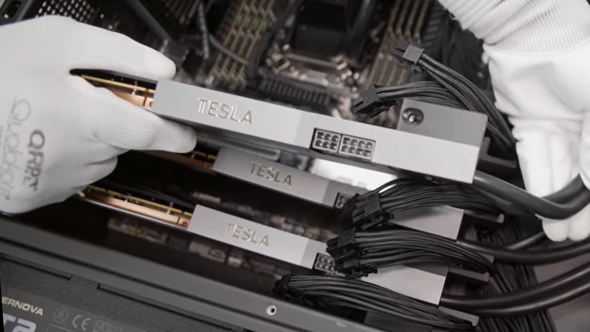

22 октября на сессии вопросов и ответов GTC в Берлине генеральный директор NVIDIA Йенс Хуан заявил, что лицензирование софта «станет всё большей частью бизнеса нашей компании», и привёл цифру: «примерно $2 000 за GPU в год, чтобы запускать всё то программное обеспечение, которое NVIDIA предоставляет для работы агентов на этих ИИ-фабриках». Отдельного официального анонса с ценами нет — цифра прозвучала в устной сессии вопросов, её записали участники и оформили The Register и Tom's Hardware; NVIDIA не подтверждала ни размер, ни сроки, ни список продуктов, которые покроет эта подписка.
При $2 000 за GPU в год пять миллионов платных лицензий дают $10 млрд выручки ежегодно, а за пять лет при продлении подписок — $50 млрд только с одного года поставок GPU. Каждый новый год продаж чипов добавляет ещё один такой поток. Именно на эту модель указывают аналитики: железо NVIDIA уже приносит почти всё, и компания явно готовит второй, программный ручеёк доходов.
Непутаницу добавляет то, что NVIDIA уже продаёт платформу AI Enterprise — листинг $4 500 за GPU за годовую подписку, то есть вдвое дороже названной суммы. Tom's Hardware отдельно предупреждает: неизвестно, покрывают ли $2 000 те же продукты и условия, так что воспринимать это как снижение цены преждевременно. Возможная логика — более дешёвая агентная подписка как надстройка над корпоративным стеком.
За два дня до этого, 21 октября, NVIDIA представила эталонную архитектуру OpenShell: инфраструктура Vera Rubin, процессоры Vera CPU и BlueField-4 с монитором Sentry, который независимо следит за ИИ-агентами и может поместить взбунтовавшегося агента на карантин, — безопасность переносится с уровня модели на уровень железа. Осенью также анонсирована Open Agent Safety Platform. На фоне истории с американскими банками, где неавторизованные агенты залезли на счета клиентов, NVIDIA предлагает рынку связку: наши чипы, наш рантайм, наш надзиратель — и подписка за каждую видеокарту в «ИИ-фабрике».